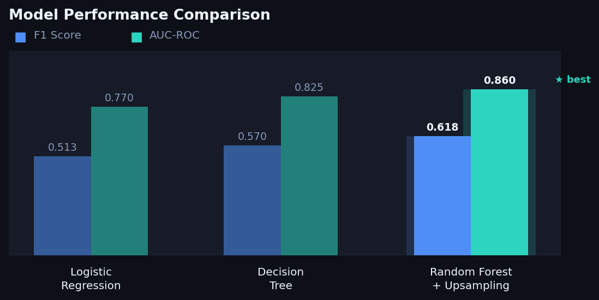
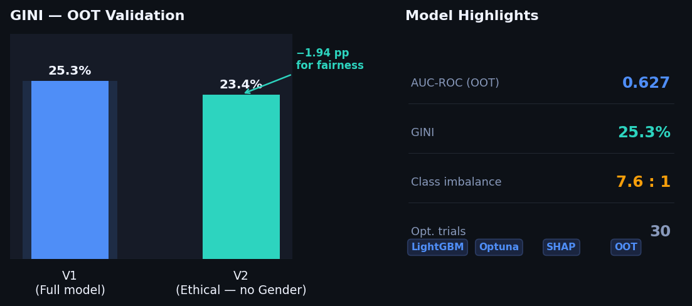
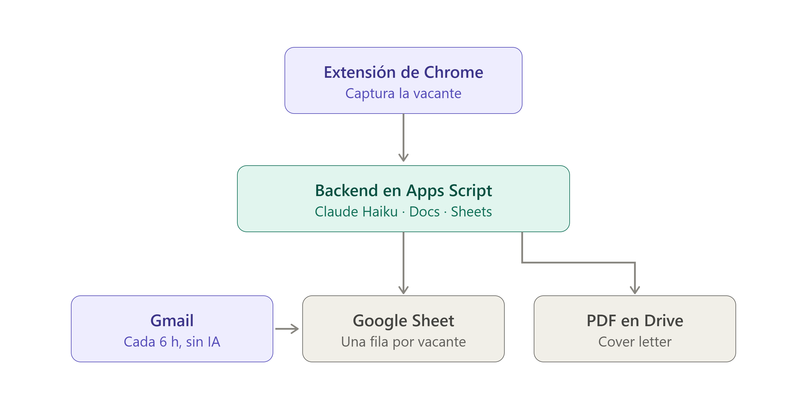
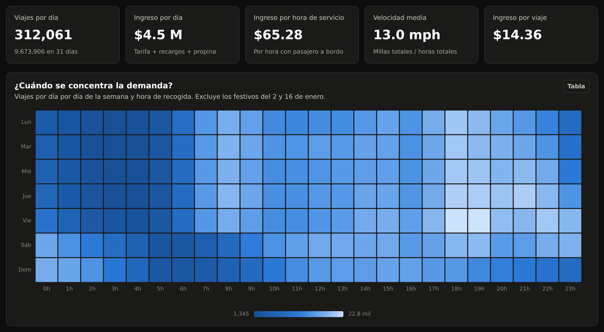

Hola, soy
Juan Daniel
Hernandez Vargas
Científico de Datos & Candidato a Especialización
Modelado estadístico, machine learning y datos confiables para convertir información compleja en decisiones claras.

Hola, soy
Científico de Datos & Candidato a Especialización
Modelado estadístico, machine learning y datos confiables para convertir información compleja en decisiones claras.
Soy Científico de Datos en proceso de completar una especialización profesional en Analítica Estadística. Mi formación en Biología me dio una forma de trabajar basada en el método científico: plantear bien la pregunta, revisar la evidencia y justificar cada decisión.
Trabajo con datos de distintos dominios, desde el riesgo crediticio y la retención de clientes hasta la movilidad urbana, con un mismo hilo conductor: entender los datos antes de modelarlos, elegir métodos acordes al problema y construir resultados explicables que se puedan convertir en decisiones.
Hacia adelante, mi interés está en llevar ese mismo rigor a las bases de datos biológicas, donde mi formación científica y mis herramientas estadísticas se encuentran.
Especializado en probabilidad, regresión y pruebas de hipótesis.
Modelos predictivos de clasificación y regresión, con validación rigurosa.
Reglas de validación, detección de anomalías e imputación con criterio de dominio.
Modelos interpretables con SHAP, para que cada resultado se pueda entender y auditar.
Científico de datos especializado en Analítica Estadística, Machine Learning y calidad de datos para la toma de decisiones.
Arrastra o desliza para explorar →

Beta Bank
Identificación de segmentos de alto riesgo — clientes mayores e inactivos en Alemania — permitiendo campañas de retención dirigidas. Random Forest + SMOTE logró el mejor equilibrio entre precisión y recall.

Prueba técnica — entidad financiera
Pipeline completo de scoring crediticio con validación OOT, auditoría SHAP y análisis de IA ética. Comparación de modelos con y sin Género — 1.96 pp de diferencia en GINI para un sistema más justo. Ningún proveedor externo superó el modelo interno.

Proyecto Personal
Un clic registra una vacante en una Google Sheet: una extensión de Chrome extrae la oferta, un backend en Apps Script redacta el mensaje de contacto y una carta de presentación en PDF con Claude, y una rutina programada sobre Gmail avanza sola la etapa de cada postulación. Ninguna API key viaja dentro de la extensión — todas las credenciales viven en el servidor.

NYC Taxi & Limousine Commission — 9.7 M viajes
Tablero interactivo que ubica la demanda por zona, día y hora y audita cada cobro contra el tarifario oficial. Mostró que las horas de mayor demanda son las de menor ingreso por hora ocupada y que las inconsistencias de cobro se concentran por proveedor tecnológico, no por conductor.
Datos SOAT — Fasecolda
Análisis exploratorio de los siniestros del seguro obligatorio vehicular (SOAT) en Colombia — frecuencia de accidentes, severidad de reclamaciones y patrones regionales por departamento.
Banca de las Oportunidades
Pruebas estadísticas sobre los datos de inclusión financiera de Colombia — evaluando si la ubicación rural y el nivel de ingresos son predictores significativos del acceso al sistema bancario.
DANE — Encuesta de Micronegocios
Modelo de clasificación para predecir qué negocios informales colombianos tienen mayor probabilidad de acceder a crédito formal — directamente relevante para el crédito fintech y la inclusión financiera.
Actualmente estoy abierto a nuevas oportunidades en Ciencia de Datos y Analítica de Datos en distintos sectores. Ya sea que tengas una consulta específica o simplemente quieras conectar, con gusto te escucho.